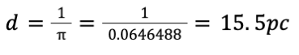

Astronomers always start with the calculations of the distance. This is
very important, since it will be crucial for the following calculations.
The unit of measurement most astronomers use is known as the
parsec. This is due to the fact that kilometers are too small of
a unit to use and its values would blow up. Light years on the
other hand can easily be understood by the public (since it takes light
in a vacuum 1 year to travel 1 light year), but the unit does not have a
lot of astronomical significance in terms of observations and
calculations. The parsec is very convenient, starting right at the
definition of what it is.
Distances to stars are measured using simple geometry (figure 1).
The main concept is that background stars are observed behind the star
of interest in July, and then again in January, or at any two dates
that are exactly on other halves of the year. This is to ensure that
the Earth in its orbit would be at exactly opposite sides of the Sun
at the two measurement dates. Then, the angle between the background
stars in January and the ones in July are measured (the parallax).
If half of this angle is equal to one arc-second, which is 1/60
of an arc-minute (1/60 of a degree), and therefore 1/3600th of a
degree, where the lobe of the sky is 360 degrees all around, then the
distance between the Sun and that star is defined as 1 parsec. Parsec
itself is a blend of the words parallax and second, from arcsecond.
Therefore, following this definition, knowing the parallax angle of a
star of interest, the distance to that star in parsecs can be
calculated as follows:
Where the distance in parsecs is defined as the inverse of the parallax
angle (pi) in degrees.
Believe it or not, the parallax measurement, the brightness measurement,
and the spectrum of the star are really the only measurements that
need to be taken by instruments. All the rest of the information can
theoretically be implied and calculated from these three measurements.
Therefore, it is very important that the parallax be measured very well.
Instruments are limited, and there is a limit of about 1000 parsecs
distance, further than which it is very difficult to measure distances.
However, instruments are getting more sophisticated as time goes on,
and this threshold is continually being extended. In the grander scheme
of things, the limit of the parallax method is still a problem, since
the universe extends far beyond 1000 parsecs, with the edge of our own
galaxy probably being 300,000 parsecs away, and other galaxies
exponentially further than that. So this method is unreliable for larger
distances outside of our relatively speaking immediate area in the
universe. Outside of that, there are many other methods and theories
used to imply distances, called the cosmic distance ladder. This
is a very interesting area of study.
For our purposes however, the parallax method is perfect. The parallax
angle of 51 Pegasi was measured most reliably as 64.6488 milliarcseconds,
or 0.0646488 arcseconds. This implies a distance of about
15.5 parsecs:
